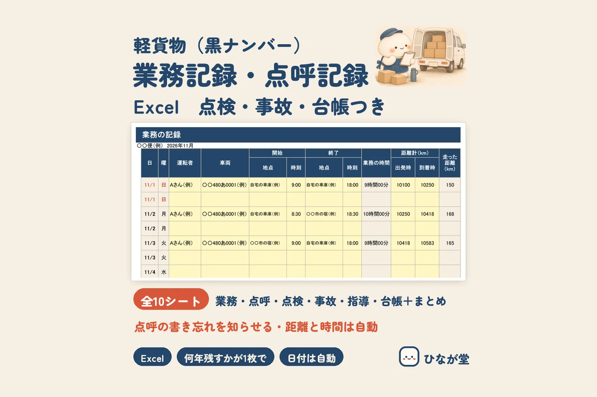

軽貨物（黒ナンバー）の仕事では、国土交通省の制度改正で、2025年4月から業務の記録などの決まりが加わり、安全対策が強められました。点呼の記録とあわせて、何を書いて、何年残すのか。一人で走っている人はどうするのか。条文と国の案内をもとに整理します。
記録するもの・残す年数の一覧
貨物自動車運送事業輸送安全規則（以下「規則」）で、軽貨物の事業者に関係する主な記録は次のとおりです。
| 記録 | 主に書くこと | 残す年数 | 根拠 |
|---|---|---|---|
| 業務の記録 | 運転者の名前・車のナンバー・業務を始めた／終えた場所と日時・主に通った場所・走った距離・休憩・事故や大きな遅れ など。荷主の都合で30分以上待ったときや、荷役作業などをしたときは、その内容も（書く条件と項目は国土交通省の FAQ で確かめてください） | 1年 | 規則 第8条 |
| 点呼の記録 | 点呼をした人と受けた人・車のナンバー・日時・方法・報告と指示の内容 など | 1年 | 規則 第7条 |
| 事故の記録 | 運転者・ナンバー・日時・場所・相手の名前・事故の概要（損害の程度を含む）・原因・再発防止の対策 | 3年 | 規則 第9条の2 |
| 指導監督の記録 | 指導をした日時・場所・内容・指導をした人と受けた人 | 3年 | 規則 第10条 |
| 運転者等台帳 | 運転者の名前・住所・生年月日・初めて業務についた日・指導や適性診断の状況 など | 運転者でなくなってから3年 | 規則 第9条の6 |
業務の記録と運転者等台帳は、四輪以上の軽自動車で運ぶ事業者が対象です。国土交通省の発表では、二輪（バイク便など）は、業務の記録・運転者等台帳・安全管理者の決まりからは外れています。点呼・事故の記録・指導監督の記録・事故の報告は、二輪も対象です。
点呼で確かめること
規則 第7条では、業務の前と後に点呼をして、その内容を記録し、1年残すことになっています。
- 業務の前…酒気帯びの有無、病気・疲れ・睡眠不足などで安全に運転できないおそれがないか、日常点検をしたか（またはその確認）
- 業務の後…車・道路・運行のようすの報告、酒気帯びの有無
酒気帯びは、目で見て確かめるだけでなく、アルコール検知器を使って確かめます（検知器は営業所ごとに備えます）。国土交通省のよくある質問（FAQ）では、点呼の記録に、アルコール検知器を使ったかどうかも書く項目として挙げられています。
点呼は、対面か、それと同じ効果があると国が認めた方法（決まった条件の遠隔点呼など）で行います。遠くの場所で業務を始める・終えるときなど、運行上やむを得ない場合は電話などで行う形が FAQ で示されています。
一人で走っている人の点呼
一人で事業をしている人は「点呼をする人がいない」と迷いやすいところです。国土交通省の FAQ（貨物軽自動車運送事業者向け・令和7年12月更新）では、次のように案内されています。
- 一人で事業をしている場合は、アルコール検知器を使った酒気帯びの確認や、車の日常点検などを自分で確かめ、運行してよいかを判断する
- 点呼は貨物軽自動車安全管理者が行う。ただし令和9年（2027年）3月31日までは、事業者の中の人が行ってもよい
- 一人で事業をしている場合は、基本的に自分を安全管理者に選ぶ（家族の従業者から選ぶこともできる）
つまり一人でも、点呼で確かめることは同じで、自分で確かめた内容を記録として残す、という考え方です。指導監督の記録を一人のときにどう書くかなど、細かい書き方は FAQ の中では見つけられませんでした。所管の運輸支局に確かめておくと安心です。
事故があったとき
事故の記録とは別に、自動車事故報告規則で決められた事故は、原則として事故の日から30日以内に報告書を出します（数えはじめる日が違う場合もあります）。一部の重い事故は、24時間以内の速報も要ります。どの事故が対象かは、規則と運輸支局の案内で確かめてください。
毎日の記録を続けるコツ
- 業務の記録と点呼の記録を、同じ紙・同じ行に並べる…別々の帳面にすると、点呼だけ書き忘れた日に気づきにくくなります
- 距離は、距離計の「出発時」と「到着時」だけ書く…走った距離は引き算で出せます。Excel なら自動で計算できます
- 名前・ナンバー・よく行く場所は、先に書いておく…毎日書くのは、時刻と距離計の数字と、その日だけのことにしぼります
- 検知器を使ったかどうかも、その場で○をつける…あとからまとめて書くと、記録の意味が薄れます
- 月の終わりに書きもれを数える…業務があったのに点呼の欄が空いている日がないか、まとめて確かめます
- 残す年数ごとに置き場所を分ける…1年残すもの（業務・点呼）と、3年残すもの（事故・指導監督・台帳）でファイルやフォルダを分けると、捨ててよい時期がわかります
- 運転者等台帳は置き場所に気をつける…住所や生年月日が入るので、渡す相手や保存する場所に注意します
国土交通省のページには、業務の記録や事故の記録の様式の例が出ています。様式の例は見本で、運輸支局から別に指定があればそちらに従う、とされています。
よくある質問
紙ではなく、パソコンの表で記録してもいいですか？
決まった様式があるわけではなく、書くことがそろっていれば形は選べます。業務の記録は、運行記録計（タコグラフ）で残すこともでき、記録されない項目は書き足します（規則 第8条第2項）。運輸支局から指定や指導があるときは、そちらに合わせてください。
以前から黒ナンバーで走っていますが、安全管理者はいつまでに選べばいいですか？
国土交通省の FAQ では、令和7年3月までに経営の届出をした事業者は、令和9年3月までに選任が必要、とされています。届出や講習の手続きは、運輸支局の案内で確かめてください。
日常点検の記録も残す決まりですか？
日常点検をしたか（または確かめたか）は、業務前の点呼で確かめることになっています。点検そのものの記録をどう残すかまでは、この記事では確かめきれていません。点呼の記録に点検の欄を作り、毎日○をつけておくと、確かめた跡が残ります。
ひなが堂の記録表：無料のお試し版と全部入り版
ひなが堂では、ここまでの記録をまとめてつけられる Excel の表を BOOTH でお分けしています。業務の記録と点呼の記録が同じ行に並び、業務があったのに点呼がない日は「注意」の欄に出ます。走った距離と業務の時間は自動で計算し、何年残すかと何の決まりにもとづくかは「根拠と保存の一覧」にまとめています。一人で走っている人は、「点呼した人」に自分の名前を選べます。
- 無料のお試し版…人2人・車1台まで、業務と点呼は1日1行。業務の記録・点呼の記録・事故の記録（3件まで）と根拠と保存の一覧が使えます（BOOTH のお試し版のページ）
- 全部入り版（1,980円）…人10人・車5台まで、1日2行。日常点検・指導監督の記録・運転者等台帳・月のまとめも入っています（BOOTH の全部入り版のページ）
どちらもパソコンの Microsoft Excel（Windows 版）で動作を確かめています。スマホ・タブレットでは確かめていません。法令で決められた様式ではなく、これだけで決まりがすべてそろうわけでもありません（アルコール検知器そのもの・事故の報告書・安全管理者の届出などは別です）。くわしくは商品のページにまとめています。
まとめ
軽貨物（四輪）の記録は、毎日の「業務の記録」と「点呼の記録」が1年、「事故の記録」「指導監督の記録」が3年、「運転者等台帳」が運転者でなくなってから3年です。一人で走っている人も、点呼で確かめることは同じで、自分で確かめて記録します。毎日書くことをしぼり、月の終わりに書きもれを確かめる形にすると続けやすくなります。
ご注意この記事は、法令や国土交通省の案内をもとにした一般的なまとめです（確認日は下に書いています）。改正されることがあります。ご自身の事業にどう当てはまるかは、所管の運輸支局で必ずご確認ください。
出典・確認日
この記事の期限・数字は、次の公式の情報で確かめました（確認日：2026-11-12）。今後の制度変更などで目安が変わることがあります。最新の情報は、お住まいの市区町村や各機関のホームページでご確認ください。
- 貨物自動車運送事業輸送安全規則 第7条（点呼）・第8条（業務の記録 1年）・第9条の2（事故の記録 3年）・第9条の6（運転者等台帳 3年）・第10条（指導監督の記録 3年）
https://laws.e-gov.go.jp/law/402M50000800022 - 貨物自動車運送事業法 第2条・第39条（「貨物自動車運送事業者」に貨物軽自動車運送事業者が入ること）
https://laws.e-gov.go.jp/law/401AC0000000083 - 自動車事故報告規則 第3条（30日以内の報告書）・第4条（24時間以内の速報）
https://laws.e-gov.go.jp/law/326M50000800104 - 国土交通省 報道発表「貨物軽自動車運送事業における安全対策を強化するための制度改正を行いました」（2024年10月1日。施行は令和7年4月）
https://www.mlit.go.jp/report/press/jidosha02_hh_000665.html - 国土交通省「貨物軽自動車運送事業における安全対策を強化するための制度改正について」（業務記録・事故記録の様式の例）
https://www.mlit.go.jp/jidosha/jidosha_tk2_000172.html - 国土交通省「貨物軽自動車運送事業者の皆様へ（点呼記録簿の例）」
https://www.mlit.go.jp/jidosha/jidosha_tk2_000162.html - 国土交通省「貨物軽自動車運送事業者に対する令和６年法令改正に伴う安全対策強化 よくある質問とその回答（FAQ）」（令和7年12月更新）
https://www.mlit.go.jp/jidosha/content/001841732.pdf